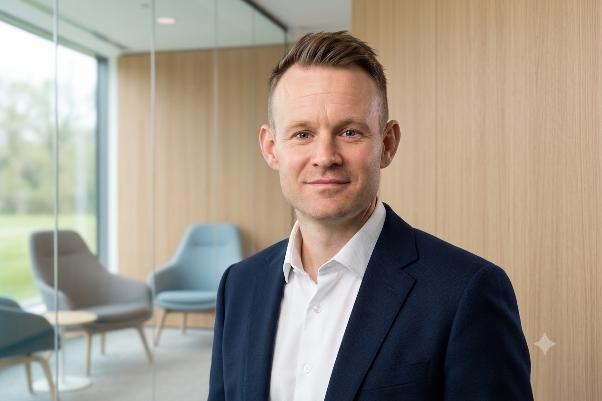
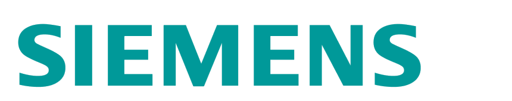

A4–6 Wochen
S/4HANA-Readiness-Check
Festpreis
SAP S/4HANA-Transformation · IT-Zielarchitektur · Programm-Review
Unabhängige Bewertung großer IT-Transformationen – aus über 20 Jahren Verantwortung in Konzernen wie BMW, Osram, Continental und Siemens.
Ich verkaufe weder Lizenzen noch Umsetzungskapazität. Sie bekommen ein Urteil, keine Anschlussofferte – in klar definierten Formaten mit Festpreis.

Vier Formate decken die häufigsten Entscheidungssituationen ab. Passt Ihr Anliegen in keines davon, vereinbaren wir ein individuelles Format.
Der Preis wird nach einem kurzen Scoping-Gespräch verbindlich genannt – vor Beauftragung, nicht nach Aufwand.
Vom ersten Gespräch bis zum Ergebnis im Gremium – mit einem verbindlichen Preis, bevor die Arbeit beginnt.
Unverbindlich. Wir klären Ihre Ausgangslage und ob eines der Formate passt.
Kurzes Scoping, danach ein verbindlicher Preis – vor Beauftragung, nicht nach Aufwand.
Ich arbeite selbst – vom Kick-off bis zum letzten Interview, ohne wechselndes Team.
Schriftliches Ergebnis, auf Wunsch vorgestellt und vertreten in Ihrem Gremium.
Keine Lizenzen, keine Umsetzungskapazität, keine Anschlussprojekte. Das Ergebnis misst sich nur daran, ob es Ihre Entscheidung besser macht.
Ich nehme pro Jahr eine begrenzte Zahl an Mandaten an. Die Erfahrung, für die Sie sich entscheiden, ist nicht nur im Kick-off im Raum.
Beauftragung direkt oder über Beratungshäuser und Vermittlungspartner, die mich für konkrete Anforderungen einbinden.
Ausschluss: Aufgrund meiner Führungsrolle in der Energiewirtschaft übernehme ich keine Mandate im Wettbewerbsumfeld meines Arbeitgebers.

Stationen in Führungs- und Architekturverantwortung – Details unter Über mich.
Auszeichnung für eine herausragende Dissertation im Bereich Enterprise Architecture Management.
Wenn ein Entwicklungszyklus statt zwei Wochen einen Tag dauert, verschiebt sich mehr als das Werkzeug: Taktung von Planung und Review, Rollen und die Verantwortung für generierten Code.
„Agile Frameworks entstanden als Antwort auf lange Feedbackzyklen. Wenn die Zyklen kürzer werden als die Rituale, die sie strukturieren sollen, ist das eine Frage an das Vorgehensmodell – keine an die Werkzeuge."
„Ich kenne beide Seiten – die operative Umsetzung und die strategische Steuerung. Deshalb entwerfe ich keine Konzepte, die an der Realität der Umsetzung scheitern."
Ein kurzes, unverbindliches Erstgespräch genügt, um zu klären, ob und in welchem Format ich Ihnen weiterhelfen kann.
Erstgespräch anfragen